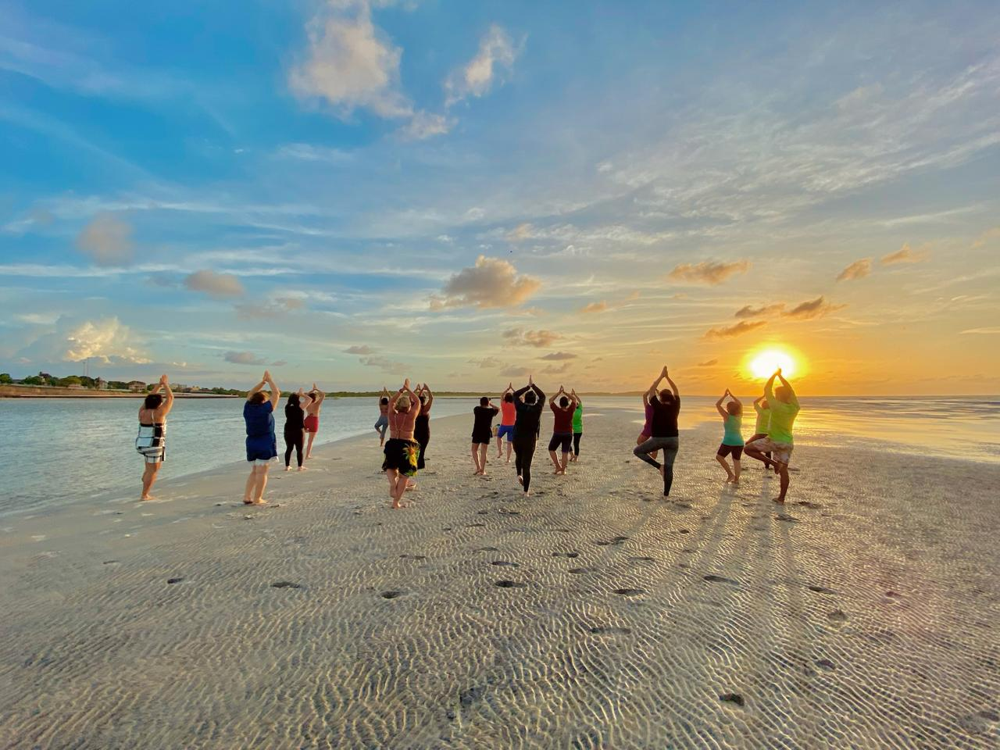
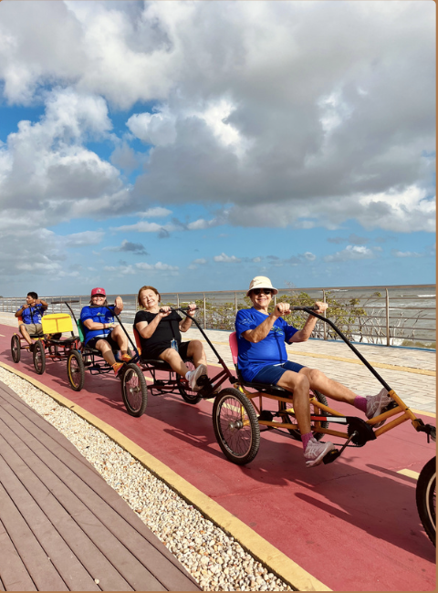
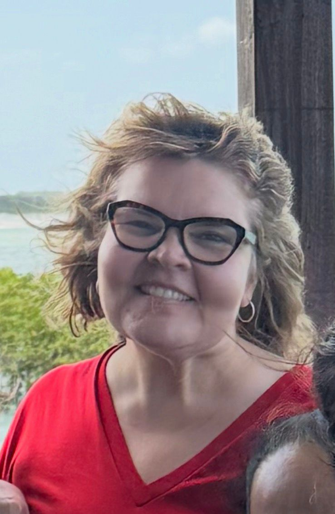

Uma pausa para reorganizar o corpo, a mente e os hábitos.
O Spa Solar Detox é um programa exclusivo de imersão em saúde e bem-estar realizado no Hotel Solar, em Salinópolis, Pará.
Garantir Minha VagaComo Tudo Começou
Criado pela nutricionista e anfitriã Luiza Barros, o projeto nasceu da percepção de que muitas pessoas que visitavam Salinas voltavam para casa transformadas após alguns dias em contato com a natureza, desacelerando da rotina e cuidando de si.
A partir dessa experiência, Luiza convidou a nutricionista Dra. Paula Aires para se tornar sua sócia no projeto. Juntas, desenvolveram um protocolo exclusivo de spa, que une avaliação metabólica individualizada, orientação nutricional e uma imersão em hábitos saudáveis em Salinópolis.
O Spa Solar Detox acontece em datas específicas ao longo do ano, com turmas reduzidas, proporcionando uma Imersão Única e Exclusiva na Região. São 6 dias de transformação absoluta para o seu corpo e mente.
Quem Guia Sua Jornada
Um método em duas etapas
Um dos grandes diferenciais do Spa Solar Detox é que a experiência começa antes mesmo da chegada ao hotel.
A Preparação
A partir do momento em que você confirma a sua reserva no Spa Solar, começa a sua jornada com a nutri Líder em emagrecimento, Dra. Paula Aires, através de uma consulta presencial ou on-line.
A avaliação inclui Bioimpedância e Exame de Calorimetria no consultório. A partir deste diagnóstico, iniciamos as orientações personalizadas, preparando o organismo de modo clínico para viver de forma mais intensa a experiência do spa.
A Imersão em Salinas
A segunda etapa acontece na estrutura premium do Hotel Solar. Nossos participantes vivem alguns dias de imersão completa em uma programação cuidadosamente selecionada.
- Alimentação funcional curativa
- Atividades físicas orientadas ao metabolismo
- Yoga e práticas meditativas de respiração
- Caminhadas restauradoras e contato com a natureza
- Hidroginástica e circuitos funcionais moderados
- Momentos de descompressão e profundo relaxamento
Mais do que um detox
O Spa Solar Detox não é apenas um programa de dieta ou emagrecimento. É uma experiência pensada para ajudar cada participante a desenvolver uma nova relação com a alimentação, o movimento e o bem-estar.
Ao longo de alguns dias em Salinópolis, em um ambiente que favorece o descanso, o equilíbrio e a reconexão com o próprio corpo, os participantes vivem uma rotina saudável e estruturada que inspira mudanças reais e possíveis para a vida após o spa.

Uma pausa para cuidar da saúde
O Spa Solar Detox é um convite para quem deseja desacelerar, cuidar do corpo e experimentar uma nova forma de olhar para a saúde.
Cada edição acontece em datas previamente definidas e conta com número limitado de participantes, garantindo um acompanhamento mais próximo e uma experiência acolhedora para todos.

A essência do SPA
Acreditamos que a verdadeira transformação envolve corpo, mente e interação. Confira um pouco das experiências que preparamos para você.
O que você vai viver nesses 6 dias?
Mais de 30 atividades, surpresas e bônus compõem essa imersão All Inclusive.
O que dizem sobre o SPA
Transformações que vão além do corpo. Veja o relato de quem já viveu esta imersão.
"O SPA Solar é diferente. Aqui a equipe se preocupa não só com o emagrecimento físico, mas também com o mental. Saio mais leve, com muito autoconhecimento e descobrindo uma nova Salinas, com atividades ao ar livre e conexão com a natureza."
Gisele Barata
Empresária"Já participei de vários SPAs, inclusive em outro estado, e não tem comparação. A equipe me acolheu, me mostrou novas possibilidades de cuidado, vi que era capaz de fazer atividades físicas e ainda fiz amizades. Saio outra pessoa. A alimentação é deliciosa, desde o shot matinal até as refeições, e cada atividade é diferente. A gestão é impecável."

Valéria Garcia
Brandt Gestão de Eventos"Mais do que emagrecimento, encontrei aqui um cuidado verdadeiro com a saúde mental. Me senti acolhida em todos os momentos, incluída em cada atividade e conectada com pessoas que me incentivam a continuar. Saio leve, motivada e muito feliz com essa experiência."
Célia
AposentadaPróxima Edição: Vagas Abertas!
As turmas são rigorosamente limitadas para garantir o atendimento clínico personalizado.
24 a 29 de Maio
Pacotes para Singles, Duplos ou Triplos.
O investimento varia de acordo com a categoria da acomodação (Loft, Luxo, etc) e quantidade de pessoas no quarto. Consulte as condições de parcelamento exclusivas.
Dúvidas Frequentes
Quantas calorias tem a alimentação do SPA?
A alimentação do SPA Solar Detox tem em média 1.000 a 1.200 kcal por dia. Essa quantidade cria um déficit calórico moderado, favorecendo naturalmente a perda de peso e a desinflamação do organismo. Mais importante que a quantidade de calorias é a qualidade dos alimentos. Utilizamos uma alimentação natural, sem glúten e sem lactose, rica em nutrientes e pensada para ajudar o corpo a se reorganizar. Muitas pessoas se surpreendem ao perceber como é possível comer bem, sentir saciedade e ainda assim desinflamar o corpo.
Vou passar fome?
Não. A programação alimentar é organizada com refeições e lanches ao longo do dia, pensados para nutrir o corpo de forma equilibrada. O objetivo não é restringir, mas ensinar o organismo a voltar ao seu ritmo natural. Ao final da experiência, muitos participantes percebem que é possível se alimentar melhor, com leveza e sem exageros.
Quanto peso normalmente se perde no SPA?
Em média, os participantes perdem entre 1 e 3 kg durante os dias do SPA. Esse resultado acontece pela combinação da alimentação funcional, das atividades físicas e do processo de desinflamação do organismo. Mais do que o número na balança, muitos relatam menos inchaço, mais energia e uma sensação de leveza no corpo.
Nunca fiz SPA. Será que vou conseguir?
Sim. Muitas pessoas participam pela primeira vez e se surpreendem com a experiência. As atividades são conduzidas por profissionais e cada participante segue seu próprio ritmo. Com o passar dos dias, o que acontece naturalmente é uma sensação de bem-estar, acolhimento e motivação para cuidar mais da própria saúde.
Estou há muito tempo sedentário. Posso participar?
Sim. O SPA recebe muitas pessoas que estão retomando o cuidado com o corpo. As atividades físicas são adaptadas pelos profissionais para respeitar o nível de cada participante. O importante não é o condicionamento físico inicial, mas o desejo de dar o primeiro passo em direção a uma vida mais saudável.
O SPA é indicado para qualquer idade?
Sim. Recebemos adultos de diferentes idades e perfis. A programação é pensada para que cada pessoa possa viver a experiência de acordo com seu momento e suas necessidades.
O que preciso levar para participar?
Roupas confortáveis para atividades físicas, roupa de banho, tênis, chinelo e itens de uso pessoal. Próximo ao evento enviamos uma lista completa com todas as orientações, para que você chegue tranquilo e pronto para viver a experiência.